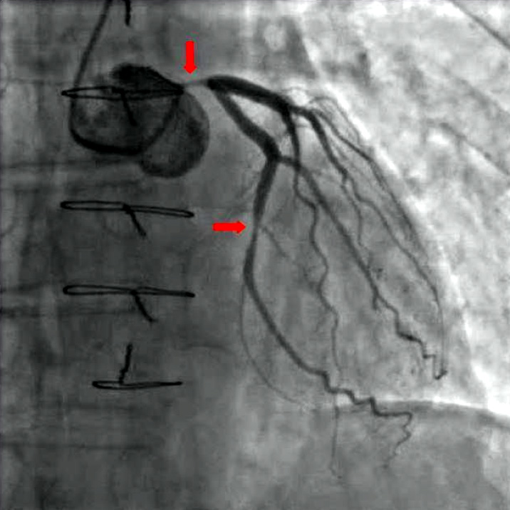

Q1. Paciente com enxaqueca hemiplégica familiar em crise. Abortivo:
Erro comum desmontado
Quando o triptano é armadilha
Muitos usam triptano “em qualquer aura” — hemiplégica familiar é a pegadinha clássica.
DAC / HAS grave
Duas situações-chave para evitar triptano: (1) doença coronariana grave / HAS grave; (2) aura hemiplégica da enxaqueca hemiplégica familiar.
O triptano causa vasoconstrição: em DAC grave (placa), pode piorar o fluxo; em HAS grave, pode piorar a pressão. Por segurança, evita-se nesses cenários. A angiografia ilustra exatamente o cenário da contraindicação.
Hemiplégica familiar
Já caiu em prova. Componente genético mais forte; aura hemiplégica. Receio: vasoconstrição perpetuar o déficit em vez de revertê-lo. Analogia da “mesa de domingo”: na família, o fenótipo hemiplégico aparece (não necessariamente todos juntos).
Aura visual pode
Aura visual permite triptano; aura hemiplégica deve evitar. Distinção de prova.
Tabela mental
| Cenário | Triptano? |
|---|---|
| DAC grave | Evitar |
| HAS grave | Evitar |
| Hemiplégica familiar | Evitar |
| Aura visual | Pode |

Pantaleo MA et al. BMC Cancer 2012;12:231 — CC BY 2.0 · Fonte: Wikimedia Commons · fonte
Coração doente, contraindicação vascular
A imagem âncora da contraindicação vascular do triptano: em coronária doente, a vasoconstrição pode ser o gatilho do evento. DAC grave e HAS grave são barreiras.
Quiz
Q2. Aura visual clássica (escotoma, zigue-zague). Sobre triptano: